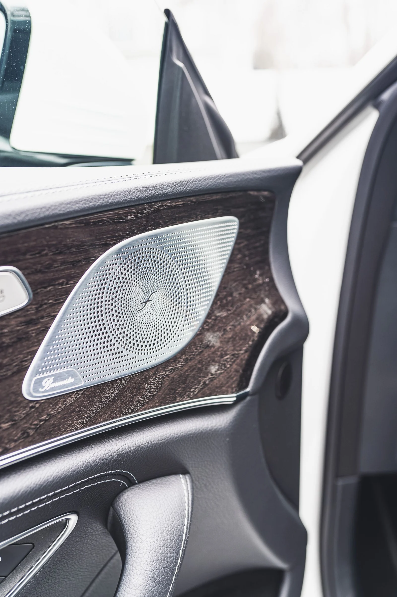
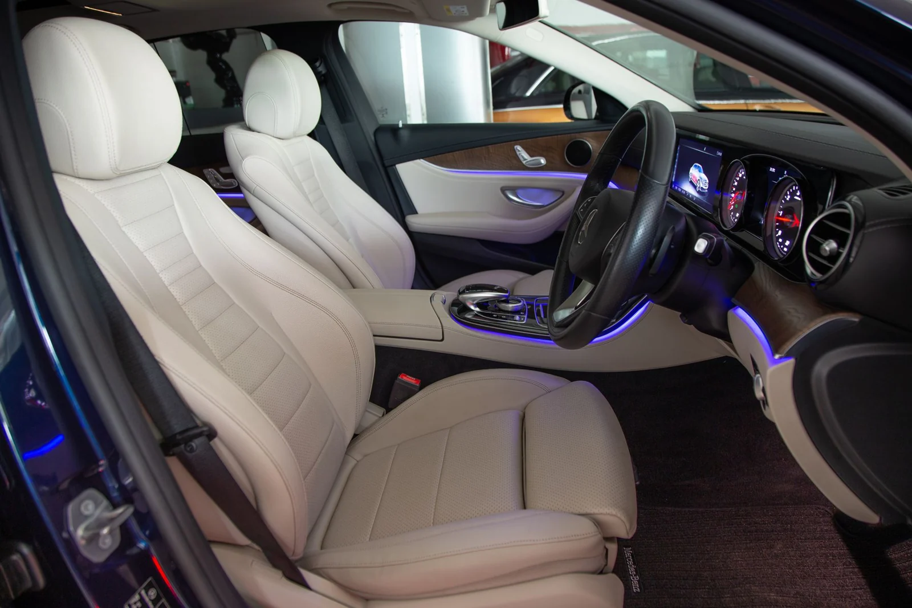
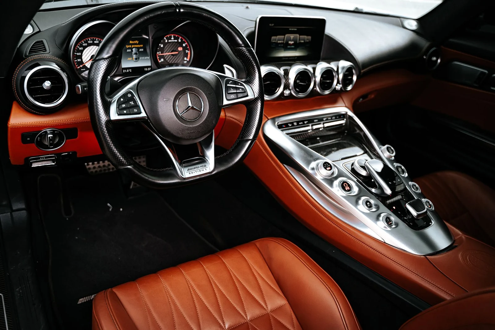

Cockpit em pele pretaReferência · Christopher Lam / Unsplash

Melhorias focadas em conforto, materiais e ambiente — sem transformar o carro numa coisa que nunca foi pensada para ser.
Fotografia real de interiores selecionada à volta de estofos, trim, detailing e do tipo de refinamento que estamos a desenvolver na PAPOA Cars.
Fotografia real de referência do Unsplash e Pexels — não são projetos concluídos pela PAPOA.






PAPOA Cars centra-se no interior, acabamento e apresentação. Trabalhamos à volta da identidade original do carro, melhorando as áreas que aumentam conforto, qualidade percebida e personalidade.
Falar sobre o carro →Intervenções em bancos, forros, painéis e acabamentos da cabine.
→Pele, Alcantara, tecidos e costuras escolhidos para o veículo.
→Madeira, metal, materiais técnicos e pequenos detalhes personalizados.
→Pequenas alterações que melhoram tacto, utilização e ambiente.
→Apresentação interior e exterior para fechar a transformação.
→Detalhes discretos desenvolvidos para um resultado mais individual.
→